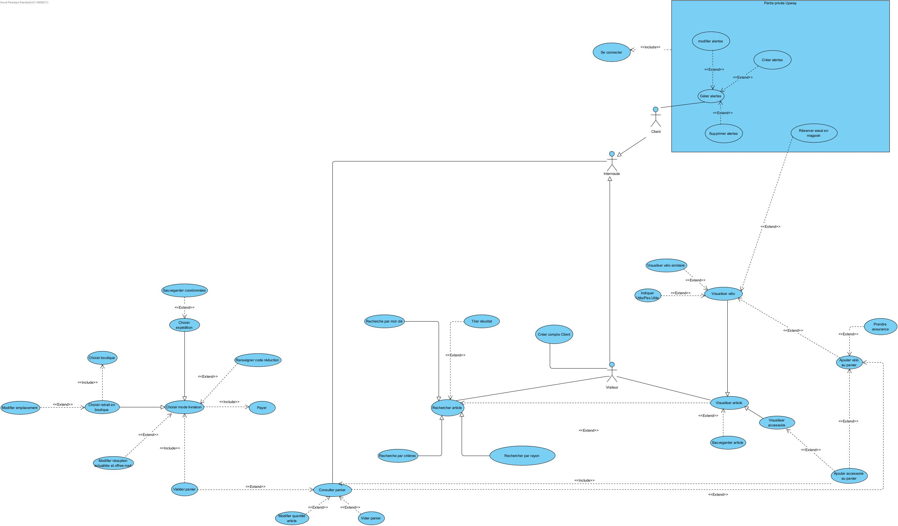
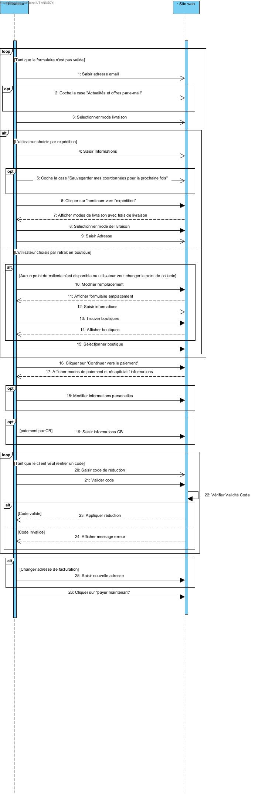

Nous avons commencé par analyser le document fourni par le client, qui présentait la société, le besoin global, ainsi que les spécifications fonctionnelles et non fonctionnelles du projet. À partir de cette analyse, nous avons réalisé une étape de conception complète reposant sur plusieurs diagrammes UML et BPMN :
- Diagramme de Use Case : permet d’identifier les différentes actions possibles pour les utilisateurs du système.
- Diagrammes de séquences : décrivent les interactions entre l’utilisateur et le système en détaillant le déroulement de chaque scénario.
- Diagramme de classes : met en évidence les objets manipulés par l’application ainsi que leurs relations.
- Diagrammes d’états : expliquent les différentes transitions d’un élément selon les actions réalisées.
- Diagrammes de classes participantes : détaillent les classes impliquées dans chaque scénario.
- Collaborations BPMN : illustrent les interactions entre les acteurs et les étapes d’un processus métier.
Ces différents modèles nous ont permis de clarifier le fonctionnement de l’application, d’anticiper les contraintes techniques et d’organiser le développement de manière structurée.
